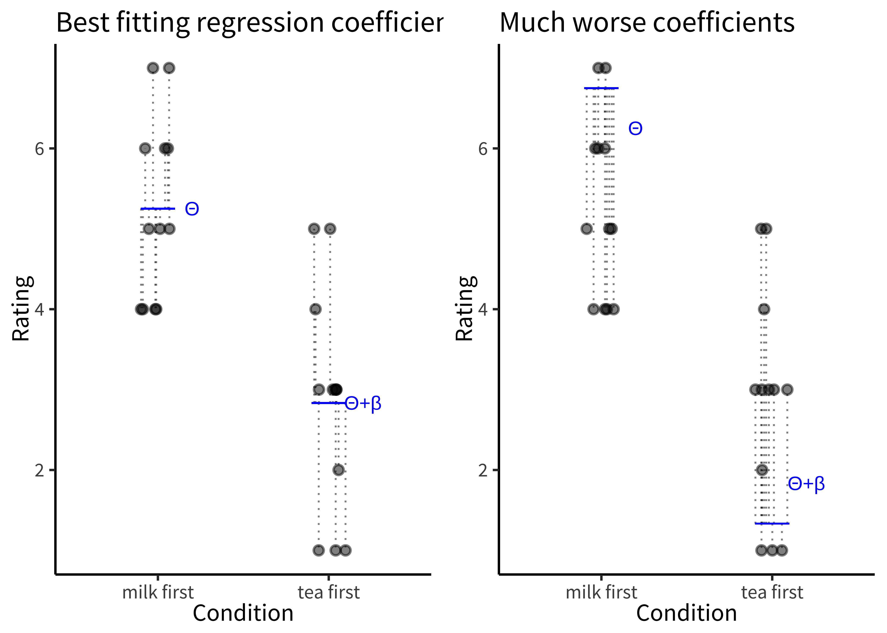
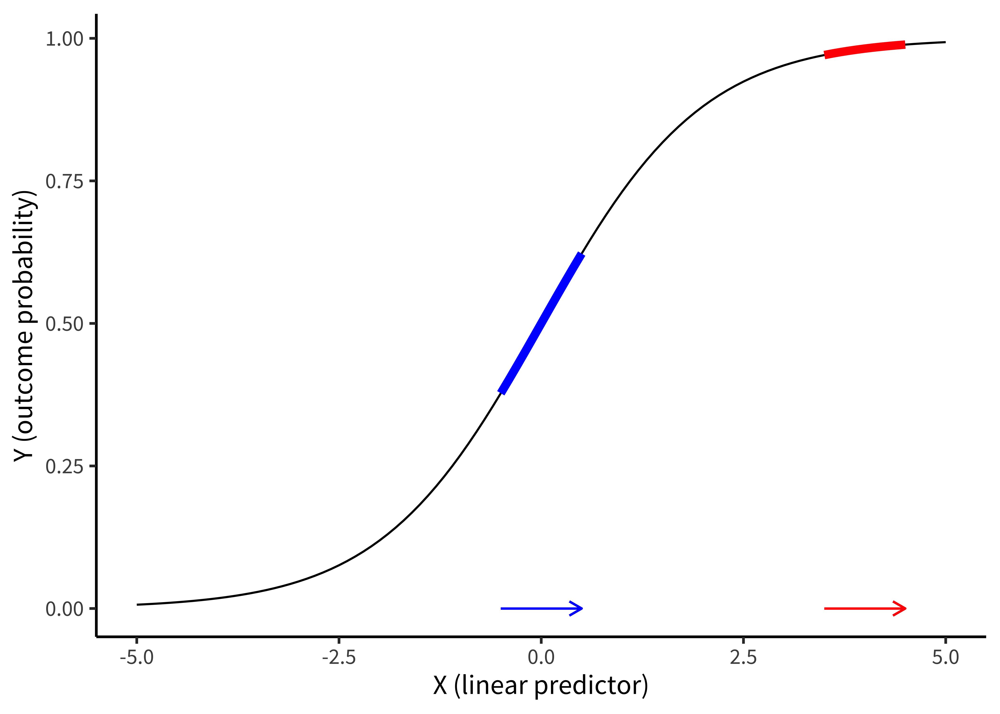
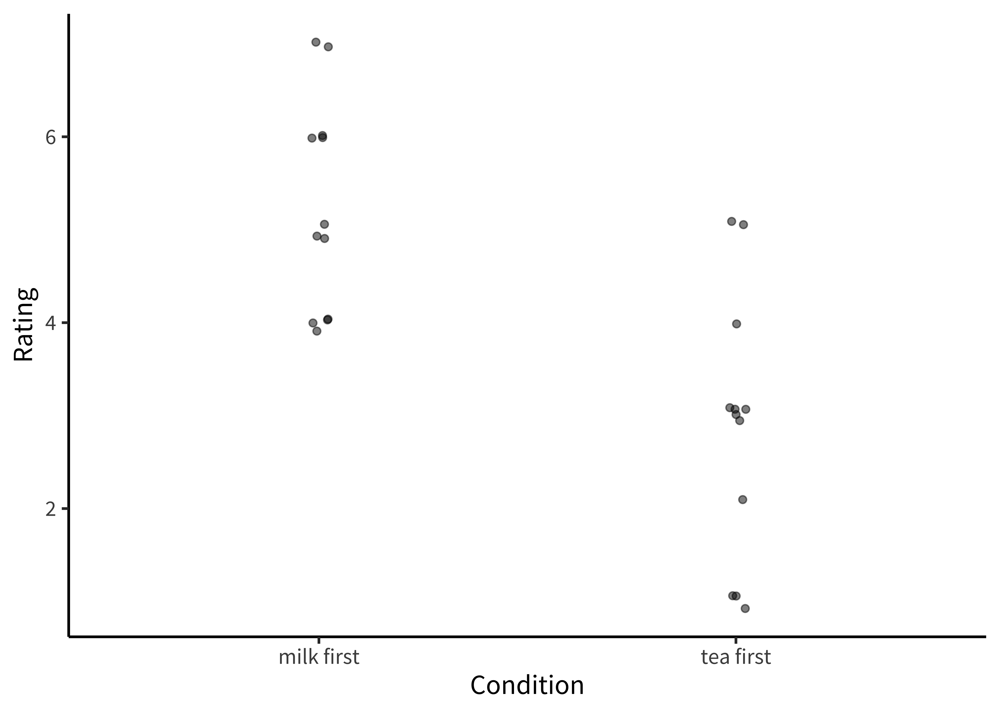
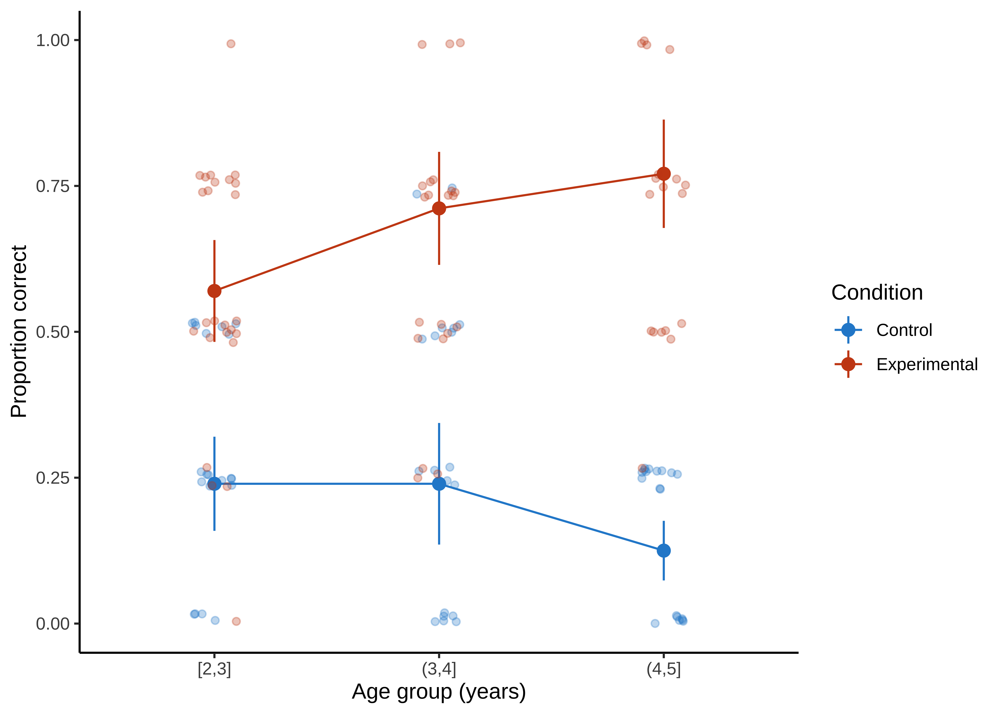
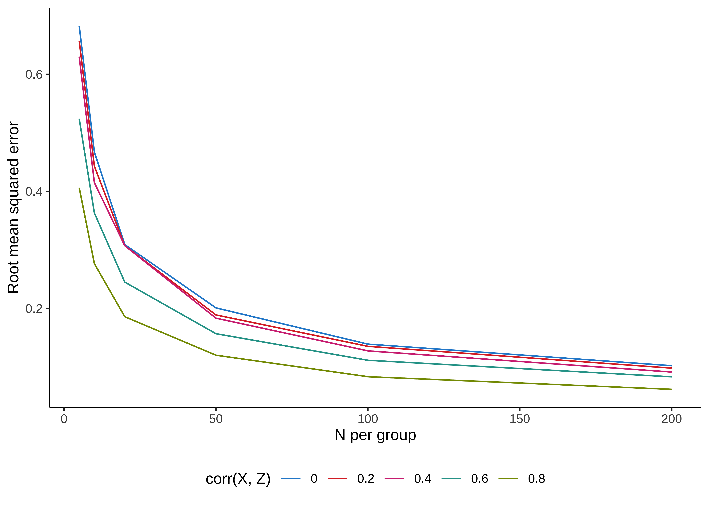

Chapter 7 Models
- Re-conceptualize statistical “tests” as models of data
- Build intuitions about how specific “tests” (e.g., t-tests) relate to more general frameworks (e.g., regression, mixed effects models)
- Identify which models are best suited for which research questions
- Describe what it means to ‘control for’ something
- Explore what kinds of clustered variance are present in our designs
- Select models appropriate for different kinds of dependent variables
In the previous two chapters, we introduced concepts surrounding estimation of an experimental effect and inference about its relationship to the effect in the population. The tools we introduced are very general, but they are limited in their applicability. Once you get beyond the world of two-condition experiments in which each participant contributes one data point from a continuous measure, the simple \(t\)-test is not sufficient.
In some statistics textbooks, the next step would be to present a whole host of other statistical tests that are designed for other special cases. We could even show a decision-tree: what if you have repeated measures? Or categorical data? Or three conditions? But this isn’t a statistics book, and even if it were, we don’t advocate that approach. The idea of finding a specific narrowly-tailored test for your situation is part and parcel of the dichotomous NHST approach that we tried to talk you out of in the last chapter. If all you want is your \(p<.05\), then it makes sense to look up the test that can allow you to compute a \(p\) value in your specific case. But we prefer an approach that is more focused on getting a good estimate of the magnitude of the causal effect – and the relation of that estimate to the population mean.
In this chapter, we begin to explore how to to go about making these estimates and making inference about them – and that brings us to the world of statistical models. A statistical model is a way of writing down a set of assumptions about how particular data are generated. Statistical models are the bread and butter tools for estimating particular parameters of interest – like the magnitude of a causal effect associated with an experimental manipulation – and making inferences about their relationship to the population parameter.
For example, a simple statistical model might assume that observed datapoints are generated via with the flip of a weighted coin. Then the process of estimation is to assess the most likely weight of the coin given the data. This model can then be used to make inferences about whether the coin’s weight differs from some null model (a fair coin, perhaps).
This example sounds a lot like the kinds of simple inferential tests we talked about in the previous chapter; not very “model-y.” But things get more interesting when there are multiple parameters to be estimated, as in many real-world experiments. In the tea-tasting scenario we’ve belabored over the past two chapters, a real experiment might involve multiple people tasting different types of tea in different orders, all with some cups randomly assigned to be milk-first or tea-first. What we’ll learn to do in this chapter is to make a model of this situation that allows us to reason about the magnitude of the milk-order effect while also estimating variation due to different people, orders, and tea types.
We’ll begin by discussing the ubiquitous framework for building statistical models, linear regression, building up connections between regression and the \(t\)-test. This section will discuss how to add covariates to regression models, and when linear regression does and doesn’t work. In the next section, we’ll discuss the generalized linear model, an innovation that allows us to make models of a broader range of data types. We’ll then briefly introduce mixed models, which allow us to model clustering in our datasets (such as clusters of observations from a single individual or single stimulus item). We’ll end with some opinionated practical advice on model building.
Stimulus-specific effects
Imagine you’re a psycholinguist who has the hypothesis that nouns are processed faster than verbs. You run an experiment where you pick out ten verbs and ten nouns, then measure a large sample of participants’ reading time for each of these. You find strong evidence for the predicted effect and publish a paper on your claim. The only problem is that, at the same time, someone else has done exactly the same study – with different nouns and verbs – and published a paper making the opposite claim. The problem in this example is that each effect is driven by the specific experimental items that were chosen (Clark, 1973). Out of hundreds of thousands of possible words, why these in particular?
The problem of generalization from sample to population is not new – as we discussed in Chapter 6, we are constantly doing this kind of inference with the samples of people that participate in our experiments. Our classic statistical techniques are designed to generalize from sample to population and we are typically sensitive to the weakness of generalizations made from very small samples of experimental participants. Not so with stimuli.92
Stimulus generalizability problems have reared their head across a surprising range of different areas of psychology. In one example, hundreds of papers were written about a phenomenon called the “risky shift” – in which groups deliberating about a decision would produce riskier decisions than individuals. Unfortunately, this phenomenon appeared to be completely driven by the specific choice of vignettes that groups deliberated about, with some producing a risky shift and others producing a more conservative shift (Westfall et al., 2015).
Another example comes from the memory literature, where a classic paper by Baddeley et al. (1975) suggested that words that take longer to pronounce (“tycoon” or “morphine”) would be remembered worse than words that took a shorter amount of time (“ember” or “wicket”) even when they had the same number of syllables. This effect also appears to be driven by the specific sets of words chosen in the original paper; the effect is robustly replicable with that set but not generalizable across other sets (Lovatt et al., 2000).
The implication of these examples is clear: experimenters need to take care in both their experimental design and analysis to avoid overgeneralizing from their stimuli to a broader construct. Three primary steps can help experimenters avoid this pitfall:
- To maximize generality, use samples of experimental items – words, pictures, or vignettes – that are comparable in size to your samples of participants.
- When replicating an experiment, consider taking a new sample of items as well as a new sample of participants.
- When experimental items are sampled random from a broader population, use a statistical model – such as the ones described below – that includes this sampling process.
7.1 Regression models
There are many types of statistical models, but this chapter will focus primarily on regression, a broad and extremely powerful class of models. A regression model relates a dependent variable to one or more independent variables. Dependent variables are sometimes called outcome variables, and independent variables are sometimes called predictor variables, covariates, or features. We will see that many common statistical estimators (like the sample mean) and methods of inference (like the \(t\)-test) are actually simple regression models. Understanding this point will help you see many statistical methods as special cases of the same underlying framework, rather than as unrelated, ad hoc methods.
7.1.1 Regression for estimating a simple treatment effect
Let’s start with one of these special cases, namely estimating a treatment effect, \(\beta\), in a two-group design. In Chapter 5, we solved this exact challenge for the tea-tasting experiment. We posited a model in which the milk-first ratings were normally distributed with mean \(\theta_{\text{milk-first}} = \theta_{\text{tea-first}} + \beta\) and with standard deviation \(\sigma_{\text{milk-first}}\).93
Let’s now write that model as a regression model, that is, as a model relating each participant’s tea rating, \(Y_i\), given that participant’s treatment assignment, \(X_i\). \(X_i=0\) represents the control (milk-first) group and \(X_i=1\) represents the treatment (tea-first) group. Here, \(Y_i\) is the dependent variable, and \(X_i\) is the independent variable. \(i\)s are an index variable for each of the participants. To make this concrete, you can see some sample tea-tasting data (N=24 for simplicity) below, with the index \(i\), the condition and its predictor \(X_i\), and the rating \(Y\).
Table 7.1: Example tea tasting data in a regression format.
| i | condition | X | rating (Y) |
|---|---|---|---|
| 1 | milk first | 0 | 6 |
| 2 | milk first | 0 | 4 |
| 3 | milk first | 0 | 5 |
| 4 | milk first | 0 | 5 |
| 5 | milk first | 0 | 5 |
| 6 | milk first | 0 | 4 |
| 7 | milk first | 0 | 6 |
| 8 | milk first | 0 | 4 |
| 9 | milk first | 0 | 7 |
| 10 | milk first | 0 | 4 |
| 11 | milk first | 0 | 6 |
| 12 | milk first | 0 | 7 |
| 13 | tea first | 1 | 2 |
| 14 | tea first | 1 | 3 |
| 15 | tea first | 1 | 3 |
| 16 | tea first | 1 | 4 |
| 17 | tea first | 1 | 3 |
| 18 | tea first | 1 | 1 |
| 19 | tea first | 1 | 1 |
| 20 | tea first | 1 | 5 |
| 21 | tea first | 1 | 3 |
| 22 | tea first | 1 | 1 |
| 23 | tea first | 1 | 3 |
| 24 | tea first | 1 | 5 |
Here’s the model:
\[\begin{align} \label{eq:ols_ttest} Y_i &= \theta_{\text{milk-first}} + \beta_{\text{tea-first}} X_i + \epsilon_i \\ \end{align}\]
A model like this is called a linear regression of Y on X. \(\theta_{\text{milk-first}} + \beta X_i\) is called the linear predictor, and it describes the expected value of an individual’s tea rating, \(Y_i\), given that participant’s treatment group \(X_i\) (the single independent variable in this model). That is, for a participant in the control group (\(X_i=0\)), the linear predictor is just equal to \(\theta_{\text{milk-first}}\), which is indeed the mean for the control group that we specified above. On the other hand, for a participant in the treatment group, the linear predictor is equal to \(\theta_{\text{milk-first}} + \beta\), which is the mean for the treatment group that we specified. In regression jargon, \(\beta\) is a regression coefficient, representing the association of the independent variable \(X_i\) with the outcome \(Y_i\).
The term \(\epsilon_i\) is the error term, referring to random variation of participants’ ratings around the group mean.94 Note that this is a very specific kind of “error”; it not to “error” due to bias, for example. Instead, you can think of the error terms as capturing the “error” that would be associated with predicting any given participant’s rating based on just the linear predictor. If you predicted a control group participant’s rating as \(\theta_{\text{milk-first}}\), that would be a good guess – but you still expect the participant’s rating to deviate somewhat from \(\theta_{\text{milk-first}}\) due to “error”. In our regression model, the linear predictor and error terms together say that participants’ ratings scatter randomly (in fact, normally) around their group means with standard deviation \(\sigma\). And that is exactly the model we posited in Chapter 5.
Figure 7.1: (left) Best-fitting regression coefficients for the tea-tasting experiment. (right) Much worse coefficients for the same data.
Now we have the model. How do we estimate the regression coefficients \(\theta_{\text{milk-first}}\) and \(\beta\)? The usual method is called ordinary least squares (OLS). Here’s the basic idea. For any given regression coefficient estimates \(\widehat{\theta}_{\text{milk-first}}\) and \(\widehat{\beta}\), we would obtain different predicted values, \(\widehat{Y}_i = \theta_{\text{milk-first}} + \beta X_i\) for each participant. Some regression coefficient estimates will yield better predictions than others. OLS estimation is designed to find the values of the regression coefficients that optimize these predictions, meaning that the predictions are as close as possible to participants’ true outcomes, \(Y_i\).95
Figure 7.1 gives a graphical illustration of the tea tasting data for each condition (the dots) along with the model predictions for each condition \(\theta_{\text{milk-first}}\) and \(\theta_{\text{milk-first}} + \beta\) (blue lines). The distance of each point to the predictions (the thing that OLS wants to minimize) is shown by the dotted lines. Another name for these errors is residuals: they are the “residual variation” that is not predicted by the model.
The left-hand plot shows the best coefficient values – the ones that move the model as close as possible to each point, minimizing the total squared length of the dashed lines. The right-hand plot shows a substantially worse solution. The amazing thing about OLS is that it is a simple way to find the best solution for a wide range of useful models.
You’ll notice that we aren’t talking much about \(p\)-values in this chapter. Regression models can be used to produce \(p\)-values on specific coefficients, representing inferences about the likelihood of a particular coefficient magnitude relative to some null hypothesis. You can also compute Bayes Factors on specific regression coefficients, or use Bayesian inference to fit these coefficients under some prior expectation about their distribution. We won’t talk much about this, or more generally how to fit the models we describe. As we said, we’re not going to give a full treatment of all the relevant statistical topics. Instead we want to help you begin thinking about making models of your data.
7.1.2 Adding predictors
The regression model we just wrote down is the same thing as the \(t\)-test from Chapter 6. But the beauty of regression modeling is that much more complex estimation problems can also be written as regression models, essentially by extending the model we made above. For example, we might want to add another predictor variable, such as the age of the participant.96
Let’s add this new independent variable and a corresponding regression coefficient to our model:
\[\begin{align} \label{eq:ols_one_covariate} Y_i &= \theta_{\text{milk-first}} + \beta_{\text{tea-first}} X_{i1} + \theta_{\text{age}} X_{i2} + \epsilon_i \\ \end{align}\]
Now that we have multiple independent variables, we’ve labeled them \(X_{group}\) (treatment group) and \(X_{age}\) for clarity.
To illustrate how to interpret the regression coefficients in this model, let’s use the linear predictor to compare the model’s predicted tea ratings for two hypothetical participants who are both in the treatment group: 20-year-old Alice and 21-year old Bob. Alice’s linear predictor tells us that her expected rating is \(\theta_{\text{milk-first}} + \beta_{\text{tea-first}} + \theta_{\text{age}} \cdot 20\). In contrast, Bob’s linear predictor is \(\theta_{\text{milk-first}} + \beta_{\text{tea-first}} + \theta_{\text{age}} \cdot 21\). We could therefore calculate the expected difference in ratings for 21-year-olds versus 20-year olds by subtracting Alice’s linear predictor from Bob’s, yielding just \(\theta_{\text{age}}\). How simple!
We would get the same result if Alice and Bob were instead 50 and 51 years old, respectively. This equivalence illustrates a key point about linear regression models in general: the regression coefficient represents the expected difference in outcome when comparing participants who differ by 1 unit of the independent variable (here, comparing participants who differ by 1 year of age). In “Practical modeling considerations” below, we discuss whether and when to “control for” additional variables (i.e., when to add them to your model).
7.1.3 When does linear regression work?
Linear regression modeling with OLS is an incredibly powerful technique for creating models to estimate the influence of multiple predictors on a single dependent variable. In fact, OLS is in a mathematical sense the best way to fit a linear model!97 But OLS only “works” – in the sense of yielding good estimates – if three big conditions are met.
- The predictor relationships being modeled must be linear. In our comparison of Alice’s and Bob’s expected outcomes based on their 1-year age difference, we were able to interpret the coefficient \(\theta_{\text{age}}\) as the average difference in \(Y_i\) when comparing participants who differ by 1 year of age, regardless of whether those ages are 20 vs. 21 or 50 vs. 51. But that’s not always true: plenty of things vary non-linearly with age – for example, imagine growth in height over age! Linear regression will give bad answers in such cases.98
- Errors must be independent. In our example, observations in the regression model (i.e., rows in the dataset) were sampled independently: each participant was recruited independently to the study and each performed a single trial. On the other hand, suppose we have repeated-measures data in which we sample participants, and then obtained multiple measurements for each participant. Within each participant, measurements would likely be correlated (perhaps due to their general level of tea enjoyment). This correlation invalidates inferences from a model that does not include it. We’ll discuss this problem in detail below.
- Errors must be normal and unrelated to the predictor. Imagine older people have very strong tea-ordering preferences while younger people do not. In that case, the models’ error term would be more variable for older participants than younger ones. This issue is called heteroskedasticity. It is a good idea to plot each independent variable versus the residuals to see if the residuals are more variable for certain values of the independent variable than for others.
If any of these three conditions are violated, estimates and inferences from your model may be suspect.
7.2 Generalized linear models
So far we have considered continuous outcome measures, like tea ratings. What if we instead had a binary outcome, such as whether a participant liked or didn’t like the tea, or a count outcome, such as the number of cups a participant chose to drink? These and other non-continuous outcomes often violate the assumptions of OLS, in particular because they often induce heteroskedastic errors.
Binary outcomes inherently violate heteroskedasticity because the variance of a binary variable depends directly on the success probability. Errors will be more variable when the expected success probability closer to 0.50, and much less variable for when the expected success is probability is closer to 0 or 1.99 This heteroskedasticity in turn means that inferences from the model (e.g., \(p\)-values) can be incorrect; sometimes just a little bit off but sometimes dramatically incorrect.100
Happily, generalized linear models (GLM) are regression models closely related to OLS that can handle non-continuous outcomes. These models are called “generalized” because OLS is one of many members of this large class of models. To see the connection, let’s first write an OLS model more generally in terms of what it says about the expected value of the outcome, which we notate as \(E[Y_i]\):
\[\begin{align} \label{eq:ols_general_form} E[Y_i] &= \beta_0 + \sum_{j=1}^p \beta_j X_j \end{align}\] where \(p\) is the number of independent variables, \(\beta_0\) is the intercept, and \(\beta_j\) is the regression coefficient for the \(j^{th}\) independent variable. This equation is just a math-y way of saying that you predict from a regression model by adding up each of the predictors independently.
The linear predictor of a GLM (i.e., \(\beta_0 + \sum_{j=1}^p \beta_j X_j\)) looks exactly the same as for OLS, but instead of modeling \(E[Y_i]\), a GLM models some transformation, \(g(.)\), of the expectation:
\[\begin{align} \label{eq:glm_general_form} g( E[Y_i] ) &= \beta_0 + \sum_{j=1}^p \beta_j X_j \end{align}\]
GLMs involve transforming the expectation of the outcome, not the outcome itself! That is, we are not just taking the outcome variable in our dataset and transforming it before fitting an OLS model, but rather we are fitting a different model entirely, one that posits a fundamentally different relationship between the predictors and the expected outcomes. This transformation is called the link function. In other words, to fit different kinds of outcomes, all we need to do is construct a standard linear model and then just transform its output via the appropriate link function.
Perhaps the most common link function is the logit link, which is suitable for binary data. This link function looks like this:
\[g(x) = \log \left( \frac{x}{1 - x} \right)\]
The resulting model is called logistic regression. The term \(\frac{x}{1 - x}\) is called an odds and represents the probability of an event occurring divided by the probability of its not occurring. Exponentiating the coefficients would yield odds ratios, which are the multiplicative increase in the odds of \(Y_i=1\) that is associated with a one-unit increase in the relevant predictor variable.
 Figure 7.2: An example of how logistic regression transforms a change in the predictor x into a change in the outcome y. The same change results in a large difference in outcome in the middle of the logistic curve (blue) vs. a small outcome at the top (red) or bottom.
Figure 7.2 shows the way that a logistic regression model transforms a predictor (\(x\)) into an outcome probability that is bounded at 0 and 1. Critically, although the predictor is still linear, the logit link means that the same change in \(x\) can result in a different change in \(y\) depending on where you are on the \(x\) scale. In this example, if you are in the middle of the predictor range, a one unit change in \(x\) results in a 0.24 change in probability (blue). At a higher value, the change is much smaller (0.02). Notice how this is different from the linear regression model above, where the same change in age always resulted in the same change in preference!
We have only scratched the surface of GLMs here. First, there are many different link functions that are suitable for different outcome types. And second, GLMs differ from OLS not only in their link functions, but also in how they handle the error terms. Our broader goal in this chapter is to show you how regression models are models of data. In that context, GLMs use link functions as a way to make models that generate many different times types of outcome data.101
7.3 Accommodating clustering in our models
Table 7.2: Outcome data \(y\) with indices indicating both participant and stimulus.
| Stimulus1 | Stimulus2 | Stimulus3 | |
|---|---|---|---|
| Participant1 | y1,1 | y1,2 | y1,3 |
| Participant2 | y2,1 | y2,2 | y2,3 |
| Participant3 | y3,1 | y3,2 | y3,3 |
Experimental data often contain multiple measurements for each participant (so-called repeated measures). In addition, as we discussed in our case study, these measurements are often based on a sample of stimulus items (which then each have multiple measures as well). Table 7.2 gives an example of what the outcome data \(y\) might look like in this case. This clustering is problematic for OLS models, because the error terms for each datapoint are not independent.
Non-independence of datapoints may seem at first glance like a small issue, but it present a deep problem for making inferences. Take the tea-tasting data we looked at above, where we had 24 observations in each condition. If we fit an OLS model, we observe a highly significant tea-first effect. Here are the inferential statistics for that coefficient: \(t(22) = -4.63\), \(p < .001\). Based on what we talked about in the previous chapter, it seems like we’d be licensed in rejecting the null hypothesis that this effect is due to sampling variation and interpret this instead as evidence for a generalizable difference in tea preference in our sampled population.
But suppose we told you that all of those 48 total observations (24 in each condition) were from one individual named George. That would change the picture considerably. Now we’d have no idea whether the big effect we observed reflected a difference in the population, but we would have a very good sense of what George’s preference is!102 Our OLS model would be wrong now because all of the error terms would be highly correlated – they would all reflect George’s preferences.
7.4 Linear mixed effects models
How can we make models that deal with clustered data? There are a number of widely-used approaches for solving this problem including linear mixed effects models, generalized estimating equations, and clustered standard errors (often used in economics). Here we will illustrate how the problem gets solved in linear mixed models, which are an extension of OLS models that are fast becoming a standard in many areas of psychology (Bates et al., 2014).
7.5 Modeling random variation in clusters
In linear mixed effects models, we modify the linear predictor itself to model differences across clusters. Instead of just measuring George’s preferences, suppose we modified the original tea-tasting experiment (without the age covariate) to collect ten ratings from each participant: five milk-first and five tea-first. We define the model the same way as we did before, with some minor differences:
\[ Y_{it} = \theta_{milkfirst} + \beta_{teafirst} X_{it} + \gamma_i + \epsilon_{it} \]
where \(Y_{it}\) is participant \(i\)’s rating in trial \(t\) and \(X_{it}\) is the participant’s assigned treatment in trial \(t\) (i.e., milk-first or tea-first).
If you compare this equation to the OLS equation above, you will notice that we added two things. First, we’ve added subscripts for trials that distinguish trials from participants. But the big one is that we added \(\gamma_i\), a separate intercept value for each participant. We call this a random intercept because it varies across participants (who are randomly selected from the population).103
The random intercept means that we have assumed that each participant has their own typical “baseline” tea rating – some participants generally like tea more than others – and these baseline ratings are normally distributed across participants. Thus, ratings are correlated within participants because ratings cluster around each participant’s unique baseline tea rating.
Following the same logic, we could fit random intercepts for different stimulus items. The addition of these crossed random intercepts of participants and items would begin to address the challenge posed by Clark (1973) in our case study above. We model participants as having normally distributed variation; we can model stimulus variation the same way, with each stimulus item assumed to produce a particular average level of performance sampled from a normally distributed population.
7.5.1 Random slopes and the challenges of mixed effects modelss
Linear mixed effects models can be further extended to model clustering of the independent variables’ effects across subjects. To do so, we can introduce random slopes (\(\delta_i\)) to the model, which are multiplied by the condition variable \(X\) and represent differences across participants in the effect of tea-tasting:
\[Y_i = \theta_{milkfirst} + \beta_{teafirst} X_{it} + \gamma_i + \delta_{i} X_{it} + \epsilon_{it}\] Just like the random intercepts, these random slopes will be assumed to vary as a normal distribution.104
This model now describes random variation in both overall how much someone likes tea and how strong their preference is. Both of these likely do vary in the population and so it seems like a good thing to put these in your model. Indeed under some circumstances, adding random slopes is argued to be very important for making appropriate inferences (Barr et al., 2013). On the other hand, the model is much more complicated. When we had a simple OLS model above, we had only two parameters to fit (\(\theta_{milkfirst}\) and \(\beta_teafirst\)) but now we have those two plus 48: 24 different individual participant intercepts and 24 participant slopes. This complexity can lead to problems in fitting the models, especially with very small datasets (where these parameters are not very well-constrained by the data) or very large datasets (where computing all these parameters can be tricky).105
More generally, linear mixed effects models are very powerful and they have become quite common in psychology. But they do have significant limitations. As we discussed, they can be tricky to fit in standard software packages. Further, the inferences we make using these models relies on our ability to specify the structure of the random effects correctly.106 If we write an incorrect model our inferences are wrong, but it is sometimes difficult to know how to check whether your model is reasonable, especially with a small number of clusters or observations.
7.6 How do you use models to analyze data?
In the first part of this chapter, we’ve described a suite of regression-based techniques – standard OLS, the generalized linear model, and linear mixed effects models – that can be used to model the data resulting from randomized experiments (as well as many other kinds of data). Further, when used appropriately, the regression-based estimates give an unbiased estimate of a causal effect of interest, the estimation of which is our main goal in doing an experiment. The advantage of regression models over the simpler estimation and inference methods we described in the prior two chapters is that these models can more effectively take into account a range of different kinds of variation including covariates, multiple manipulations, and clustered structure.
But – practically speaking – how should go you about building a model for your experiment? What should you put in and what should you leave out? There are many ways to use models to explore datasets, but in this section we will try to sketch a default approach for the use of models to estimate causal effects in experiments in the most straightforward way. Think of this as a starting point or default. We’ll begin this section by giving a set of rules of thumb, then discuss a worked example. Our final subsection will deal with the complex issue of covariate adjustment and when you should include covariates in your model.
7.6.1 Modeling rules of thumb
Our approach to building statistical modeling is to start with what we call the “default model.”
The “default” model of an experiment should include the full design of the experiment, and nothing else. If you are manipulating a variable, include it in your model. If you are manipulating two, include them both and their interaction. If your design includes repeated measurements for participants, include a random effect of participant; if it includes experimental items for which repeated measurements are made, include a random effect of stimulus. But don’t include lots of other stuff in the default model. You are doing a randomized experiment, and the strength of randomized experiments is that you don’t have to worry about confounding based on the population (see Chapter 1). So don’t put a lot of covariates in your default model – usually don’t put in any!107
This default model then represents a simple summary of your experimental results. Its coefficients can be interpreted as estimates of the effects of interest, and it can be used as the basis for inferences about the relation of the experimental effect to the population using either frequentist or Bayesian tools. Here’s a bit more guidance about this default modeling strategy.
- Preregister your model. If you adjust your analysis after you see your data, you risk \(p\)-hacking – choosing an analysis that inflates the estimate of your effect of interest. As we discussed in Chapter 3 and as we will discuss in more detail in Chapter 11, one important strategy for avoiding this problem is to preregister your analysis.108
 Figure 7.3: Raw data, means, and confidence intervals for the tea-tasting experiment.
Visualize the model against the data. As we’ll discuss in Chapter 14, the “default model” for an experiment should go alongside a “default visualization” that similarly reflects the full design structure of the experiment and the primary clusters. In visualizing data like those from our tea-tasting experiment, show individual participants’ average ratings (as in Figure 7.3). The best way to check whether a model fits your data is then to plot it on top of those data. Sometimes this combination of model and data can be as simple as a scatter plot with a regression line. But seeing the model plotted alongside the data can often reveal a mismatch between the two. A model that does not describe the data very well is not a good source of generalizable inferences!
Interpret the predictions of the model. Once you have a model, don’t just read off the \(p\)-values for your coefficients of interest. Walk through the each coefficient, considering how it relates to your outcome variable. For a simple two group design like we’ve been considering, the condition coefficient is the estimate of the causal effect that you intended to measure! Consider its sign, its magnitude, and its precision (standard error).
7.6.2 A worked example
 Figure 7.4: Example stimulus materials from Stiller et al. (2015).
Figure 7.4: Example stimulus materials from Stiller et al. (2015).
All this advice may seem abstract, so let’s put it into practice on a simple example. For a change, let’s look at an experiment that’s not about tea tasting. Here we’ll consider data from an experiment testing preschool children’s language comprehension [Stiller et al. (2015); we also use these data in Appendix C]. In this experiment, 2–5 year old children saw displays like the one in Figure 7.4. In the experimental condition, a puppet said “My friend has glasses! Which one is my friend?” The goal was to measure how many children made the inference that the puppets friend was the face with glasses and no hat. To estimate this effect, participants were randomly assigned to either the experimental condition or to a control condition in which the puppet had eaten too much peanut butter and couldn’t talk, but they still had to guess which face was his friend. Data from this experiment consisted of 588 total observations from 147 children, with four different experimental items – faces, houses, beds, and plates of pasta – each presented to each child. The primary hypothesis of this experiment was that an inference effect would provide support for the idea that preschool children could make pragmatic inferences.
This experimental design looks a lot like some versions of our tea-tasting experiment. We have one primary condition manipulation, presented between-participants so that some participants are in the experimental condition and others are in the control condition. Our measurements are repeated within participants across different experimental items. Finally, we have one important, pre-planned covariate: children’s age.109 Experimental data are plotted in Figure 7.5.
Figure 7.5: Data for Stiller et al. (2015). Each point shows a single participant’s proportion correct trials plotted by age group, jittered slightly to avoid overplotting. Larger points and associated confidence intervals show mean and 95% confidence intervals for each condition.
How should we go about making our default model for this dataset?110 We simply include each of these design factors in a mixed effects model; we use a logistic variant of the linear mixed effects model (a generalized linear mixed effects model) because we would like to predict correct performance on each trial, which is a binary variable. So that gives us an effect of condition and age as a covariate. We further add an interaction between condition and age in case the condition effect varies meaningfully across groups. Finally, we add random effects of participant and experimental item.111
The resulting model looks like this:
\[ logit(Y_{it}) = \beta_{cntl} + \beta_{age} * age_y + \beta_{exp} * X_i + \beta_{age*exp} * age_i * X_i + \gamma_i + \delta_t + \epsilon_{it} \]
Let’s break this down left to right:
- \(logit(Y_{it})\) says that we are predicting a logistic function of \(Y_it\), whether child \(i\) was correct on trial \(t\).
- \(\beta_{cntl}\) is the intercept, our estimate of the average log odds of correct responses for participants in the control condition.
- \(\beta_{age} * age_y\) is the age predictor. \(\beta_{age}\) represents change in log odds associated with a year more or less of age, and \(age_i\) is the age for each participant.112
- \(\beta_{exp} * X_i\) is the condition predictor. \(\beta_{exp}\) represents the change in log odds associated with being in the experimental condition (the causal effect of interest!), and \(X_i\) an indicator variable that is 1 if child \(i\) is in the experimental condition and 0 for the control conditions. Multiplying \(\beta_{exp}\) by this indicator means that the predictor has the value 0 for participants in the control condition and \(\beta_{exp}\) for those in the experimental condition.
- \(\beta_{age*exp} * age_i * X_i\) is the interaction between age and experimental condition. \(\beta_{age*exp}\) represents the change in log odds associated with being one year older and in the experimental condition. This term is multiplied by both each child’s age and the condition indicator \(X_i\).
- \(\gamma_i\) is the random intercept for individual participants, capturing individual variation in the odds of success across trials.
- \(\delta_t\) is the random intercept for individual experimental items, capturing variation in the odds of success across the four different items.
| Term | \(\hat{\beta}\) | 95% CI | \(z\) | \(p\) |
|---|---|---|---|---|
| Control condition | -1.46 | [-1.88, -1.04] | -6.76 | < .001 |
| Age (years) | -0.38 | [-0.75, -0.01] | -1.99 | .046 |
| Experimental condition | 2.26 | [1.82, 2.70] | 10.07 | < .001 |
| Age (years) * Experimental condition | 0.92 | [0.42, 1.43] | 3.60 | < .001 |
Let’s estimate this model and see how it looks. We’ll focus here on interpretation of the so-called fixed effects (the main predictors), as opposed to the participant and item random effects.113 Table 7.3 shows the coefficients. Again, let’s walk through each.
The control condition estimate (intercept) is \(\hat{\beta} = -1.46\), 95% CI \([-1.88, -1.04]\), \(z = -6.76\), \(p < .001\). This estimate reflects that the log odds of a correct response for an average-age participant in the control condition is -1.46, which corresponds to a probability of 0.19. If we look at Figure 7.5, that estimate makes sense: 0.19 seems close to the average for the control condition.
The age effect estimate is \(\hat{\beta} = -0.38\), 95% CI \([-0.75, -0.01]\), \(z = -1.99\), \(p = .046\). There is a slight decrease in the probability of a correct response for older children in the control condition. Again, looking at Figure 7.5, this estimate is interpretable: we see a small decline in the probability of a correct response for the oldest age group.
The key experimental condition estimate then is \(\hat{\beta} = 2.26\), 95% CI \([1.82, 2.70]\), \(z = 10.07\), \(p < .001\). This estimate means that the log odds of a correct response for an average-age participant in the experimental condition is the sum of the estimates for the control (intercept) and the experimental conditions: -1.46 + 2.26, which corresponds to a probability of 0.69. Again, grounding our interpretation in Figure 7.5, this estimate corresponds to the average value for the experimental condition.
Finally, the interaction of age and condition is \(\hat{\beta} = 0.92\), 95% CI \([0.42, 1.43]\), \(z = 3.60\), \(p < .001\). This positive coefficient reflects that with every year of age, the difference between control and experimental conditions grows.
In sum, this model suggests that there was a substantial difference in performance between experimental and control conditions, in turn supporting the hypothesis that children in the sampled age group can perform pragmatic inferences. This example illustrates the “default model” framework that we recommend – the idea that a single regression model corresponding to the design of the experiment can yield an interpretable estimate of the causal effect of interest, even in the presence of several other sources of variation.
7.6.3 When does it makes sense to include covariates in a model?
Let’s come back to one piece of advice that we gave above about making a “default” model of an experiment: not including covariates. This advice can seem surprising. Many demographic factors are of interest to psychologists and other behavioral scientists, and in observational studies these factors will almost always be related to important life outcomes. So why not put them into our experimental models? After all, we did include age in our worked example above!
Well, if you have one or at most a small handful of covariates that you believe are meaningfully related to the outcome, you can plan in advance to put them in your model. If you think that your effect is likely to be moderated a specific demographic characteristic – as we did with age and pragmatic inference in our example above – then this inclusion can be quite useful.
Further, including covariates can increase the precision of your estimates by reducing “noise” in your outcome, and if you hypothesize that they interact. What’s surprising though is how little this adjustment does to increase your overall precision unless the correlation between covariate and outcome is very big. Figure 7.6 shows this relationship in a simple simulation. Only when the correlation between covariate and outcome (e.g., age and tea rating) is greater than .6 – .8 does this adjustment really help.114
Figure 7.6: Decreases in estimation error (root mean squared error) due to adjusting for covariates, plotted by the N participants in each group and the correlation between the covariate and the outcome.
That said, there are quite a few reasons not to include covariates – motivating our recommendation to skip them in your default model unless you have very strong expectations for either A) a correlation with the outcome or B) a strong moderation relationship.
The first reason is simply because we don’t need to. Because randomization cuts causal links, our experimental estimate is an unbiased estimate of the causal effect of interest. We are guaranteed that, in the limit of many different experiments, even though people with different ages will be in the different tea tasting conditions, this source of variation will be averaged out.
The second reason is that, on average, including more covariates into models actually (slightly) decreases the probability that the model can detect a true effect. Just by chance covariates can “soak up” variation in the outcome, leaving less to be accounted for by the true effect!
The third reason is that you can actually compromise your causal inference by including some covariates, particularly those that are collected after randomization. The logic of randomization is that you cut all causal links between features of the sample and the condition manipulation. But you can “uncut” these links by accident by adding variables into your model that are related to group status. This problem is generically called conditioning on post-treatment variables and a full discussion of is out of the scope of this book, but it’s something to avoid [and read up on if you’re worried about it; Montgomery et al. (2018)].
Finally, one of the standard justifications for controlling is actually ill-founded as well: adding covariates because your groups are unbalanced. People often talk about “unhappy randomization”: you randomize to the different tea-tasting groups, for example, but then it turns out the mean age is a bit different between groups. Then you do a t-test or some other statistical test and find out that you actually have a significant age difference.115 But incidental demographic differences between groups are unlikely to be important unless that characteristic is highly correlated with the outcome (see above).
So these are are options: if a covariate is known to be very strongly related to our outcome, we can include it in our default model. Otherwise, we avoid a lot of trouble by leaving covariates out.
7.7 Chapter summary: Models
In the last three chapters, we have spelled out a framework for data analysis that focuses on the key experimental goal: a measurement of a particular causal effect. We began with basic techniques for estimating effects and making inferences about how these effects estimated from a sample can be generalized to a population. This chapter showed how these ideas naturally give rise to the idea of making models of data, which allow estimation of effects in more complex designs. Simple regression models, which are formally identical to other inference methods in the most basic case, can be extended with the generalized linear model as well as with mixed effects models. Finally, we ended with some guidance on how to build a “default model” – an (often pre-registered) regression model that maps onto your experimental design and provides the primary estimate of your key causal effect.
References
Clark (1973), from whom this example is adapted, calls this the “language-as-fixed-effect” fallacy. This is a great label for folks who already know about fixed vs. random effects, but it doesn’t highlight how it connects to the broader set of issues of generalizability that we highlight here and in Chapter 10, so we’ll mostly use the label “stimulus generalizability.”↩︎
Here’s a quick reminder that “model” here is a way of saying “set of assumptions about the data generating procedure.” So saying that some equation is a “model” is the same as saying, we think this is where the data came from. We can “turn the crank” – generate data through the process that’s specified in those equations, e.g., pulling numbers from a normal distribution with mean \(\theta_{\text{milk-first}}\) and standard deviation \(\sigma_{\text{milk-first}}\). In essence, we’re committing to the idea that this process will give us data that are substantively similar to the ones we have already.↩︎
Formally, we’d write \(\epsilon_i \sim N(0, \sigma^2)\). The tilde means “is distributed as”, and what follows is a normal distribution with mean 0 and variance \(\sigma^2\).↩︎
Specifically, OLS minimizes squared error loss, in the sense that it will choose the regression coefficient estimates whose predictions minimize \(\sum_{i=1}^n \left( Y_i - \widehat{Y}_i\right)^2\), where \(n\) is the sample size. A wonderful thing about OLS is that those optimal regression coefficients (generically termed \(\widehat{\mathbf{\beta}}\)) turn out to have a very simple closed form: \(\widehat{\mathbf{\beta}} = \left( \mathbf{X}'\mathbf{X} \right)^{-1} \mathbf{X}'\mathbf{y}\). We are using more general notation here because there could be multiple independent variables. Therefore, \(\widehat{\mathbf{\beta}}\) is a vector, \(\mathbf{X}\) is a matrix of independent variables for each subject, and \(\mathbf{y}\) is a vector of participants’ outcomes. As more good news, the standard error for \(\widehat{\mathbf{\beta}}\) has a similarly simple closed form.↩︎
The ability to estimate multiple coefficients at once is a huge strength of regression modeling, so much so that sometimes people use the label multiple regression to denote that there is more than one predictor + coefficient pair.↩︎
There is a precise sense in which OLS gives the very best predictions we could ever get from any model that posits linear relationships between the independent variables and the outcome. That is, you can come up with any other linear model you want, and yet if the assumptions of OLS are fulfilled, predictions from OLS will always be less noisy than those of your model. This is because of an elegant mathematical result called the Gauss-Markov Theorem.↩︎
One way to accommodate non-linearities is to modify the linear predictor to include polynomial terms, such as \(\text{age}^2\), which then allow us to fit a curve rather than just a straight line. It is always a good idea to use visualizations like scatter plots to look for possible problems with linearity.↩︎
Specifically, the variance of a binary variable with success probability \(p\) is simply \(p(1-p)\), which is maximized at \(p=0.50\).↩︎
There’s a whole school of thought in economics that claims that it’s OK to use linear regression for binary outcomes. One commentator described this as “wrong but super useful” because the coefficients are simple to interpret as probabilities. Our position is that the linear probability model is an approximation that can be useful but should only be deployed with care by researchers who have given some thought to its weaknesses.↩︎
We sometimes think of linear models as a set of tinker toys you can snap together to stack up a set of predictors. In that context, link functions are an extra “attachment” that you can snap onto your linear model to make it generate a different response type.↩︎
We discuss the strengths and weaknesses of repeated-measures designs like this in Chapter 9 and the statistical tradeoffs of having many people with a small number of observations vs. a small number of people with many observations in Chapter 10.↩︎
Formally, we’d notate this random variation by saying that \[\gamma_i \sim N(0, \tau^2)\], in other words, that participants’ random intercepts are sampled with a normal distribution with standard deviation \(\tau\).↩︎
These random slopes and intercepts can be fit independently, or assumed to be correlated with one another.↩︎
Many R users may be familiar with the widely-used
lme4package for fitting mixed effects models using frequentist tools related to maximum likelihood. Such models can also be fit using Bayesian inference with thebrmspackage, which provides many powerful methods for specifying complex models.↩︎One particularly problematic situation is when the correlation structure of the errors is mis-specified, for example if observations within a participant are more correlated for participants in the treatment group than in the control group; in such cases, mixed model estimates can be substantially biased (Bie et al., 2021).↩︎
One corollary to having this kind of default perspective on data analysis: When you see an analysis that deviates substantially from the default, these deviations should provoke some questions. If someone drops a manipulation from their analysis, adds a covariate or two, or fails to control for some clustering in the data, did they deviate because of different norms in their sub-field, or was there some other rationale? This line of reasoning sometimes leads to questions about the extent to which particular analytic decisions are post-hoc and driven by the data (in other words, \(p\)-hacked).↩︎
A side benefit of preregistration is it makes you think through whether your experimental design is appropriate – that is, is there an analysis that estimates the effect you want from the data you intend to collect?↩︎
Our sampling plan for this experiment was actually stratified across age, meaning that we intentionally recruited the same number of participants for each one-year age group – because we anticipated that age was highly correlated with children’s ability to succeed in this experiment. We’ll present this kind of sampling in more detail in Chapter 10.↩︎
This experiment was not preregistered, but the paper includes a separate replication dataset with the same analysis.↩︎
There’s lots of debate in the literature about the best random effect structure for mixed effects models. This is a very tricky and technical subject. In brief, some folks argue for so-called maximal models, in which you include every random effect that is justified by the design (Barr et al., 2013). In our case, that would mean including random slopes of condition for each experimental item. The problem is that these models can get very complex, and can be very hard to fit using standard software. We won’t weigh in on this topic, but as you start to use these models on more complex experimental designs, it might be worth reading up.↩︎
We have centered our age predictor in this example so that all estimates from our model are for the average age of our participants. Centering is a good practice for modeling continuous predictors because it increases the interpretability of other parts of the model. For example, because age is centered in this model, the intercept \(\beta_{cntl}\) can be interpreted as the predicted odds of a correct trial for a participant at the average age.↩︎
Participant means are estimated to have a standard deviation of 0.23 (in log odds) while items have a standard deviation of
rround(as.data.frame(lme4::VarCorr(mod))$sdcor[2],2)`. These indicate that both of our random effects capture meaningful variation.↩︎A relationship that strong is very unusual for most experiments in psychology, not least because our outcome measures are very unlikely to even be reliable enough to correlate with themselves at \(r > .8\) let alone with another variable; see Chapter 8 for more details on this point.↩︎
Incidentally, this practice makes no sense: because you randomized, you know that the difference in ages occurred by chance, so why are you using a t-test to test if the variation is due to chance?↩︎